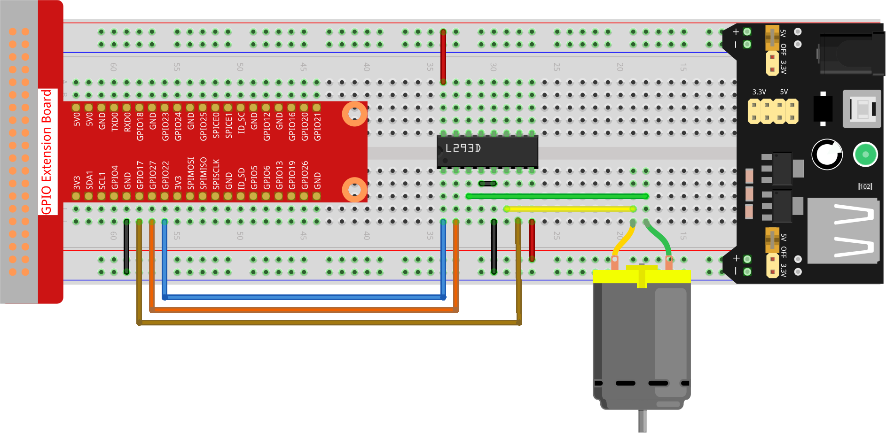

Note
Hello, welcome to the SunFounder Raspberry Pi & Arduino & ESP32 Enthusiasts Community on Facebook! Dive deeper into Raspberry Pi, Arduino, and ESP32 with fellow enthusiasts.
Why Join?
Expert Support: Solve post-sale issues and technical challenges with help from our community and team.
Learn & Share: Exchange tips and tutorials to enhance your skills.
Exclusive Previews: Get early access to new product announcements and sneak peeks.
Special Discounts: Enjoy exclusive discounts on our newest products.
Festive Promotions and Giveaways: Take part in giveaways and holiday promotions.
👉 Ready to explore and create with us? Click [here] and join today!
1.3.1 Motor
Introduction
In this project, we will learn to how to use L293D to drive a DC motor and make it rotate clockwise and counterclockwise. Since the DC Motor needs a larger current, for safety purpose, here we use the Power Supply Module to supply motors.
Required Components
In this project, we need the following components.

Schematic Diagram

Experimental Procedures
Step 1: Build the circuit.
Note
The power module can apply a 9V battery with the 9V Battery Buckle in the kit. Insert the jumper cap of the power module into the 5V bus strips of the breadboard.

Step 2: Get into the folder of the code.
cd ~/davinci-kit-for-raspberry-pi/python-pi5
Step 3: Run.
sudo python3 1.3.1_Motor.py
As the code runs, the motor first rotates clockwise for 5s then stops for 5s, after that, it rotates anticlockwise for 5s; subsequently, the motor stops for 5s. This series of actions will be executed repeatedly.
Warning
If there is an error prompt RuntimeError: Cannot determine SOC peripheral base address, please refer to If gpiozero doesn’t work.
Code
Note
You can Modify/Reset/Copy/Run/Stop the code below. But before that, you need to go to source code path like davinci-kit-for-raspberry-pi/python-pi5. After modifying the code, you can run it directly to see the effect.
#!/usr/bin/env python3
from gpiozero import Motor
from time import sleep
# Initialize the Motor with GPIO Zero, specifying GPIO pins for forward (17), backward (27), and enable (22) control
motor = Motor(forward=17, backward=27, enable=22)
try:
# Main function to control the motor's direction and movement.
# Alternates motor rotation between clockwise and counterclockwise with stops in between.
actions = {'CW': motor.forward, 'CCW': motor.backward, 'STOP': motor.stop} # Define motor actions for readability
while True:
# Loop through the defined actions to control motor direction
for action in ['CW', 'STOP', 'CCW', 'STOP']:
actions[action]() # Execute the current action (forward, stop, backward, stop)
print(f"{action}") # Display the current action in the console
sleep(5) # Pause for 5 seconds before proceeding to the next action
except KeyboardInterrupt:
# Gracefully handle a keyboard interrupt (e.g., Ctrl+C) to stop the program
pass
Code Explanation
These import statements bring in the
Motorclass from thegpiozerolibrary and thesleepfunction from thetimemodule.#!/usr/bin/env python3 from gpiozero import Motor from time import sleep
This line initializes a
Motorobject, specifying the GPIO pins for forward (17), backward (27), and enable (22) control.# Initialize the Motor with GPIO Zero, specifying GPIO pins for forward (17), backward (27), and enable (22) control motor = Motor(forward=17, backward=27, enable=22)
The actions for motor control are defined in a dictionary for readability. An infinite loop (while True) iterates through these actions, executing each for 5 seconds.
try: # Main function to control the motor's direction and movement. # Alternates motor rotation between clockwise and counterclockwise with stops in between. actions = {'CW': motor.forward, 'CCW': motor.backward, 'STOP': motor.stop} # Define motor actions for readability while True: # Loop through the defined actions to control motor direction for action in ['CW', 'STOP', 'CCW', 'STOP']: actions[action]() # Execute the current action (forward, stop, backward, stop) print(f"{action}") # Display the current action in the console sleep(5) # Pause for 5 seconds before proceeding to the next action
This segment allows the program to be terminated safely using a keyboard interrupt (Ctrl+C) without causing errors.
except KeyboardInterrupt: # Gracefully handle a keyboard interrupt (e.g., Ctrl+C) to stop the program pass